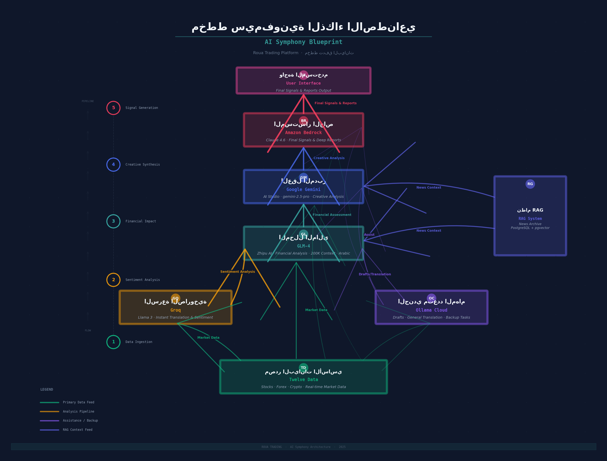
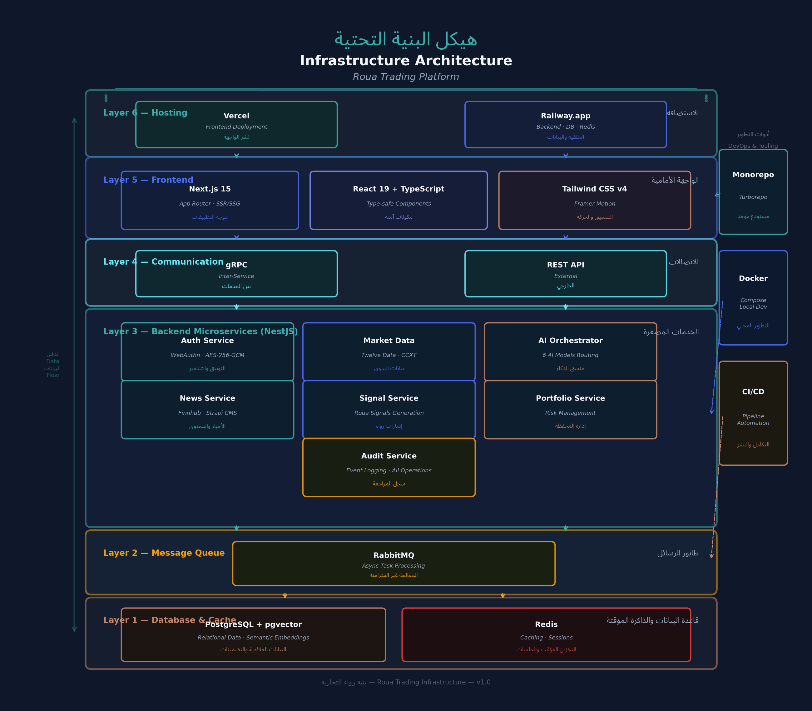
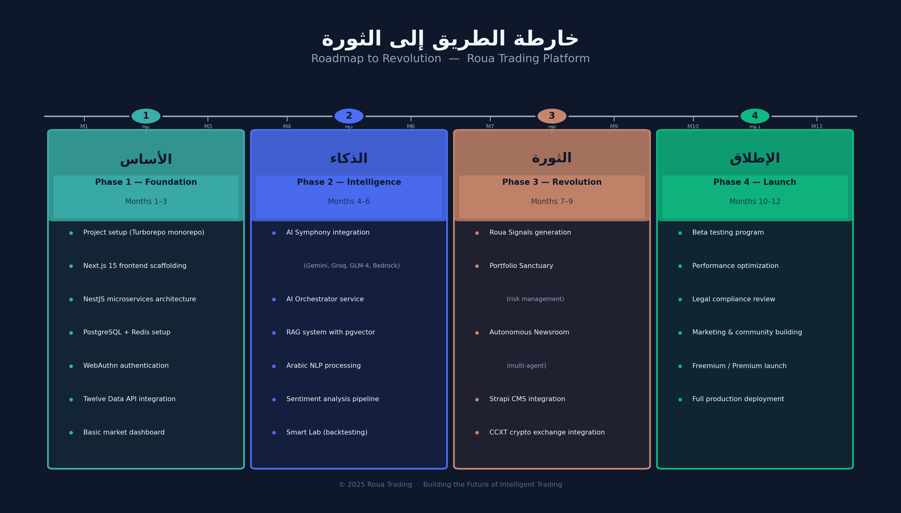

الخطة الشاملة والنهائية لبناء طبقة ذكاء مالي تربط المتداول بجميع أسواق العالم عبر واجهة واحدة آمنة
في عالم تتسارع فيه الأسواق المالية وتتشابك البيانات من كل حدب وصوب، يحتاج المتداول العربي إلى أكثر من مجرد منصة تنفيذية أو أداة تحليل تقليدية. يحتاج إلى "وعي مالي" يفهم لغته، ويدرك سياقه الثقافي والاقتصادي، ويقدم له رؤى قابلة للتنفيذ في الوقت الفعلي. منصة "رؤى" (Roua Trading) تُعَرِّف نفسها ليس كوسيط مالي أو وسيط تنفيذي، بل كطبقة ذكاء مالي (Financial Intelligence Layer) تجلس فوق جميع منصات التداول والأسواق، وتوفر للمتداول تحليلات عميقة وإشارات ذكية متعددة المصادر عبر واجهة موحدة وآمنة.
ما يميز "رؤى" عن أي منصة أخرى في السوق هو الدمج الرائد لستة نماذج ذكاء اصطناعي متخصصة في سيمفونية واحدة متجانسة، حيث يتولى كل نموذج دوره بدقة متناهية: من التحليل العاطفي الفوري إلى التقييم المالي العميق، ومن الرؤية الإبداعية الشاملة إلى توليد الإشارات النهائية الموقعة إلكترونيًا. هذه السيمفونية لا تقدم تحليلات دقيقة فحسب، بل تضمن أنها خاصة وآمنة ومتحدثة بالعربية الأصيلة — بلهجاتها ومصطلحاتها المحلية.
يفهم العامية العربية والمصطلحات المالية المحلية بدقة متناهية. مدعوم بنموذجي GLM-4 وGemini، يستطيع تحليل استفسارات المتداول باللهجة المصرية أو الخليجية أو الشامية وتقديم إجابات دقيقة بالسياق المالي الصحيح. لا حاجة للكتابة بالفصحى أو الإنجليزية — "رؤى" تفهمك كما تتحدث.
توصيات تداول قابلة للتنفيذ مع شرح مبسط بالعربية. تُصاغ كـ"تحليل فني" وليس "نصيحة استثمارية" مع توقيع إلكتروني للتنفيذ التلقائي. كل إشارة تأتي مع مستوى ثقة، وإطار زمني، ومستوى المخاطرة، وشرح تفصيلي للأسباب وراءها.
تدفق حي يدمج أخبار العالم من Finnhub مع تحليل "رؤى" الحصري المنتج بواسطة غرفة الأخبار الآلية. كل خبر يُحلَّل فورًا من حيث الأثر على المحفظة، ويُربط بالأصول المتأثرة، ويُقدَّم مع تقييم فوري للمخاطر والفرص.
أداة استباقية لإدارة المخاطر عبر جميع الأصول والمنصات. تراقب المحفظة في الوقت الفعلي، وتُنبِّه عند تجاوز حدود المخاطرة المحددة مسبقًا، وتقترح إعادة توازن تلقائية. تدعم حسابات Value at Risk وMonte Carlo Simulation لقياس المخاطر بشكل كمي متقدم.
منصة Backtesting متكاملة وباني بوتات تداول بدون كود. يتيح للمتداول اختبار استراتيجياته على بيانات تاريخية حقيقية قبل المخاطرة، وبناء بوتات تداول مخصصة عبر واجهة سحب وإفلات بسيطة. كل بوت يُوقَّع إلكترونيًا ويُسجَّل في نظام المراجعة الشامل.
رؤى = (ذكاء اصطناعي متعدد × بيانات شاملة × أمان صفري) + لغة عربية أصيلة + تصميم هادئ
هذه المعادلة تمثل جوهر المنصة: التلاقح بين الذكاء الاصطناعي متعدد النماذج والبيانات الشاملة من جميع الأسواق والأمان الصفري المطلق، مع التميز باللغة العربية الأصيلة والتصميم الهادئ (Calm Design) الذي يركز المتداول على ما يهم.
السوق العربي يفتقر إلى منصة تحليل مالي متقدمة تتحدث لغته وتفهم سياقه. المتداول العربي يعتمد إما على منصات أجنبية لا تفهم مصطلحاته المحلية، أو على مصادر غير موثوقة على وسائل التواصل الاجتماعي. في الوقت نفسه، تزداد تعقيدات الأسواق المالية عالميًا، وتتسارع وتيرة التغير، مما يجعل التحليل اليدوي أو الاعتماد على نموذج واحد غير كافٍ. "رؤى" تأتي لتملأ هذه الفجوة بمزيج فريد من التكنولوجيا المتقدمة والفهم العميق لاحتياجات المتداول العربي.
من الناحية التقنية، نحن في لحظة تاريخية حيث أصبحت النماذج اللغوية الكبيرة قادرة على فهم السياق المالي المعقد، وأصبحت واجهات برمجة التطبيقات للأسواق المالية متاحة بتكاليف معقولة. الدمج بين هذه القدرات في منصة واحدة متماسكة هو ما يجعل "رؤى" ممكنة الآن — وهو ما كان مستحيلاً قبل سنوات قليلة.
سيمفونية الذكاء الاصطناعي هي قلب منصة "رؤى" النابض. بدلاً من الاعتماد على نموذج واحد قد يُخطئ أو يهلوس، توزّع المنصة المهام على ستة نماذج متخصصة وفقًا لنقاط قوة كل منها. البيانات تتدفق عبر خط أنابيب متسلسل حيث يُغذِّي كل نموذج النموذج التالي بنتائجه، بينما يعمل نموذج Ollama كمساعد متعدد المهام في كل مرحلة. النتيجة النهائية هي تحليل متعدد الطبقات يجمع بين السرعة والعمق والدقة.

يوضح الجدول التالي توزيع المهام على كل نموذج مع تقدير التكلفة الشهرية بناءً على الاستخدام المتوقع لـ 10,000 مستخدم نشط:
| النموذج | الدور الأساسي | المهام الفرعية | نوع الاستدعاء | التكلفة التقديرية/شهر |
|---|---|---|---|---|
| Google Gemini gemini-2.5-pro |
العقل المدبر | تحليل إبداعي شامل، ربط أنماط تاريخية، سيناريوهات بديلة، مراجعة جودة | ~500K رمز/يوم | $1,500 |
| Groq Llama 3 70B |
السرعة الصاروخية | تحليل عاطفي فوري، ترجمة فورية، تصنيف أخبار، استخلاص كيانات | ~2M رمز/يوم | $800 |
| GLM-4 Zhipu AI |
المحلل المالي | تقييم أثر مالي، معالجة عربية، تكامل RAG، تقارير مالية متخصصة | ~1M رمز/يوم | $1,200 |
| Ollama Cloud | الجندي متعدد المهام | مسودات أولية، ترجمة عامة، مهام احتياطية، تلخيص ثانوي | ~800K رمز/يوم | $400 |
| Amazon Bedrock Claude 4.6 |
المستشار الخاص | توليد إشارات نهائية، تقارير معمقة، توقيع إلكتروني، تحليل متقدم | ~300K رمز/يوم | $2,000 |
| Twelve Data | مصدر البيانات | أسعار حية (أسهم، فوركس، عملات رقمية، سلع، مؤشرات)، بيانات تاريخية | ~500K طلب/يوم | $600 |
$6,500 / شهر
لـ 10,000 مستخدم نشط — قابلة للتوسع خطيًا مع نمو القاعدة
واحدة من أخطر المخاطر في الاعتماد على الذكاء الاصطناعي في التحليل المالي هي "الهلوسة" — أي تقديم معلومات غير دقيقة بثقة عالية. تعالج "رؤى" هذه المشكلة عبر ثلاث طبقات حماية متتالية:
قبل أن يُصدر أي نموذج تحليله، يستعين بنظام RAG (Retrieval-Augmented Generation) الذي يبحث في أرشيف الأخبار المخزّن في PostgreSQL مع pgvector. هذا يضمن أن التحليل مبني على وقائع فعلية وليس على معرفة النموذج الداخلية التي قد تكون قديمة أو غير دقيقة.
بفضل سياق 200K رمز، يتحقق GLM-4 من تناسق التحليل مع البيانات المالية الفعلية ويتحقق من الأرقام والنسب المذكورة. أي تناقض يُعلَّم عنه ويُسجَّل في نظام المراجعة.
يقوم Gemini بمراجعة شاملة للتحليل النهائي قبل اعتماده، ويتحقق من الاتساق المنطقي ويربط الأنماط بالسياق التاريخي. هذه المراجعة المزدوجة تضمن مستوى عاليًا من الدقة والموثوقية.
البنية التحتية لمنصة "رؤى" مبنية على فلسفة الخدمات المصغرة (Microservices) حيث يُفصَل كل نطاق وظيفي إلى خدمة مستقلة تتواصل مع غيرها عبر gRPC داخليًا وRabbitMQ للمهام غير المتزامنة. هذه البنية تضمن المرونة في التوسع، والاستقلالية في النشر، والقدرة على تحمل الأعطال دون تأثير على المنصة ككل.

| الخدمة | المسؤولية | التقنيات | الاتصال |
|---|---|---|---|
| Auth Service | مصادقة WebAuthn (Passkeys)، تشفير مفاتيح API، رفض مفاتيح السحب، إدارة الجلسات | WebAuthn, AES-256-GCM, Redis sessions, JWT | gRPC + REST |
| Market Data Service | تدفق بيانات الأسواق الحية، تخزين مؤقت، توحيد البيانات من مصادر متعددة | Twelve Data, CCXT, WebSocket, Redis cache | gRPC + WS |
| AI Orchestrator | توجيه المهام للنماذج الستة، إدارة خط الأنابيب، موازنة الحمل، Rate Limiting | Hybrid Client, Token Bucket, RabbitMQ | gRPC |
| News Service | غرفة الأخبار الآلية، وكلاء البحث والكتابة، أرشفة RAG، إدارة Strapi CMS | Finnhub, Strapi, pgvector, Multi-Agent | gRPC + REST |
| Signal Service | توليد إشارات رؤى، التوقيع الإلكتروني، صياغة قانونية، تتبع الأداء | Bedrock Client, Digital Signatures, Backtesting | gRPC |
| Portfolio Service | إدارة المخاطر، تتبع الأصول، تنبيهات VaR، اقتراحات إعادة التوازن | Monte Carlo, VaR, Redis real-time | gRPC + WS |
| Audit Service | تسجيل كل حدث، تتبع استدعاءات API، مراقبة الأمان، تقارير الامتثال | PostgreSQL append-only, Event Sourcing | gRPC + RabbitMQ |
تُقدِّم هذه الطبقة واجهة موحدة للتعامل مع جميع مصادر البيانات ومنصات التداول. بفضل نمط Adapter، يمكن إضافة مصدر بيانات جديد أو منصة تداول دون تعديل أي كود موجود. كل محول (Adapter) يُترجم بيانات المصدر إلى نموذج بيانات موحد تستخدمه جميع خدمات المنصة.
| المصدر | نوع البيانات | الأولوية | آلية الاتصال |
|---|---|---|---|
| Twelve Data | أسهم، فوركس، عملات رقمية، مؤشرات | رئيسي (Primary) | WebSocket + REST API |
| CCXT | +100 منصة عملات رقمية | رئيسي للعملات الرقمية | REST API + WebSocket |
| EODHD / Polygon.io | أسهم عالمية، بيانات تاريخية | احتياطي (Fallback) | REST API |
خارطة الطريق مبنية على أربع مراحل متتالية تمتد على مدى 12 شهرًا. كل مرحلة تبني على إنجازات المرحلة السابقة وتضيف طبقة جديدة من القدرات. النهج تدريجي: نبدأ بالأساس التقني المتين، ثم نبني الذكاء، ثم نُحدث الثورة بالميزات المتقدمة، وأخيرًا نُطلق للمستخدمين.

في هذه المرحلة، نؤسس البنية التحتية التقنية الكاملة التي ستبني عليها جميع المراحل اللاحقة. يشمل ذلك إعداد Monorepo مع Turborepo، وبناء الهيكل الأساسي لتطبيق Next.js 15 مع App Router وReact 19 وTypeScript، وتصميم هندسة الخدمات المصغرة بـ NestJS مع gRPC وRabbitMQ. كما نُعدّ قواعد البيانات (PostgreSQL مع pgvector وRedis) وننفذ نظام المصادقة الحصري عبر WebAuthn (Passkeys) مع رفض أي مفتاح API يحتوي صلاحيات سحب. ندمج Twelve Data API كمصدر بيانات رئيسي ونبني لوحة السوق الأساسية.
هذه هي مرحلة "الروح" — حيث ندمج النماذج الستة في سيمفونية واحدة. نبني خدمة AI Orchestrator التي توجه المهام وفقًا لنقاط قوة كل نموذج، وننفذ خط أنابيب البيانات المتسلسل من Groq إلى GLM-4 إلى Gemini إلى Bedrock. ندمج نظام RAG مع pgvector لتقديم سياق إخباري حقيقي، ونُفعِّل المعالجة العربية المتقدمة عبر GLM-4. نختتم ببناء المختبر الذكي للـ Backtesting.
مع الأساس المتين والذكاء المدمج، ننتقل إلى إطلاق الميزات التي ستميز "رؤى" عن أي منصة أخرى. نبني نظام إشارات رؤى مع التوقيع الإلكتروني والصياغة القانونية الآمنة، وملاذ المحفظة لإدارة المخاطر الاستباقية عبر جميع الأصول. نُفعِّل غرفة الأخبار الآلية بنظام الوكلاء المتعددين، ونضمّن Strapi CMS لإدارة المحتوى. نوسع التغطية عبر CCXT لأكثر من 100 منصة عملات رقمية، ونُصلّب الأمان بشكل متقدم.
المرحلة الأخيرة تركز على الاستقرار والأداء والامتثال قبل الإطلاق العام. نُجري برنامج اختبار تجريبي شامل مع مجموعة مختارة من المتداولين، ونُحسِّن الأداء لتحقيق زمن استجابة أقل من 200 مللي ثانية. نُراجع الامتثال القانوني بالتفصيل مع خبراء ماليين وقانونيين، ونُطلق حملة تسويقية مستهدفة لبناء مجتمع المتداولين العرب. نُفعِّل نظام الاشتراكات (Freemium/Premium/Institutional) وننتقل إلى بيئة الإنتاج الكاملة على Vercel + Railway.
| المعلم | الشهر | معيار النجاح |
|---|---|---|
| النموذج الأولي الداخلي (Internal Alpha) | 3 | لوحة سوق تعمل مع بيانات Twelve Data الحية |
| دمج أول نموذجين AI (Groq + GLM-4) | 5 | تحليل عاطفي + تقييم مالي عربي يعملان معًا |
| السيمفونية الكاملة (Full Symphony) | 6 | 6 نماذج AI تعمل في خط أنابيب متسلسل |
| إشارات رؤى الأولى | 8 | إشارة موقعة إلكترونيًا مع شرح عربي مبسط |
| إطلاق Beta | 10 | 500 مستخدم تجريبي نشط مع معدل احتفاظ أعلى من 60% |
| الإطلاق العام | 12 | منصة مستقرة مع 5,000 مستخدم مسجل |
الأمان ليس ميزة تُضاف في نهاية التطوير — بل هو العمود الفقري الذي تُبنى عليه كل طبقة من طبقات المنصة. فلسفة "رؤى" الأمنية قائمة على مبدأ الثقة الصفرية (Zero-Trust): لا شيء موثوق به افتراضيًا، وكل طلب يجب أن يُثبت شرعيته. هذا القسم يقدم قائمة مراجعة أمنية شاملة تغطي كل جانب من جوانب المنصة.
لا كلمات مرور. لا رموز SMS. لا تطبيقات مصادقة ثانوية. الاعتماد الحصري على WebAuthn (Passkeys) يعني أن المصادقة مبنية على التشفير غير المتماثل مع ربط بيولوجي (بصمة/وجه) أو جهاز مادي. هذا يُلغي تمامًا هجمات التصيد الاحتيالي وسرقة كلمات المرور. يُخزَّن المفتاح العام فقط على الخادم، بينما يبقى المفتاح الخاص على جهاز المستخدم — مما يعني أن اختراق قاعدة البيانات لا يكشف أي بيانات مصادقة قابلة للاستخدام.
عند إدخال مفتاح API لأي منصة تداول، تفحص "رؤى" صلاحيات المفتاح فورًا. إذا احتوى المفتاح على أي صلاحية من صلاحيات Withdraw أو Transfer أو Withdrawals، يُرفض المفتاح تمامًا ولا يُخزَّن. هذا يضمن أنه حتى لو تم اختراق المفتاح المشفر، لن يكون من الممكن سحب أي أموال. الفحص يتم عبر استدعاء API endpoint خاص بكل منصة للتحقق من الصلاحيات الفعلية.
تُشفَّر مفاتيح API بتشفير AES-256-GCM مع تشفير من جانب العميل قبل الإرسال. يُنشئ العميل مفتاح تشفير مشتق من كلمة مرور المستخدم (مع salt عشوائي) عبر PBKDF2 مع 100,000 دورة. على الخادم، يُعاد التشفير بمفتاح رئيسي مخزَّن في متغيرات البيئة مع IV فريد لكل مفتاح. حتى لو وصل مهاجم إلى قاعدة البيانات، سيجد نصوصًا مشفرة لا يمكن فكها بدون المفتاح الرئيسي.
| الفئة | الإجراء | الأولوية | الحالة |
|---|---|---|---|
| المصادقة | WebAuthn (Passkeys) حصريًا — لا كلمات مرور | حرجة | مطلوب في المرحلة 1 |
| المصادقة | جلسات مشفرة في Redis مع TTL تلقائي | حرجة | مطلوب في المرحلة 1 |
| التشفير | AES-256-GCM لمفاتيح API — تشفير مزدوج (عميل + خادم) | حرجة | مطلوب في المرحلة 1 |
| التشفير | PBKDF2 مع 100,000 دورة لاشتقاق مفاتيح التشفير | حرجة | مطلوب في المرحلة 1 |
| صلاحيات API | رفض أي مفتاح يحتوي صلاحيات Withdraw أو Transfer | حرجة | مطلوب في المرحلة 1 |
| صلاحيات API | فحص دوري تلقائي لصلاحيات المفاتيح المخزنة | عالية | المرحلة 3 |
| الشبكة | CSP (Content Security Policy) صارم | حرجة | مطلوب في المرحلة 1 |
| الشبكة | HSTS مع max-age سنة كحد أدنى | حرجة | مطلوب في المرحلة 1 |
| الشبكة | CORS محدود بالنطاقات المصرح بها فقط | حرجة | مطلوب في المرحلة 1 |
| الشبكة | CSRF Protection مع SameSite cookies | عالية | مطلوب في المرحلة 1 |
| التسجيل | تسجيل شامل لكل حدث (Audit Logging) | عالية | المرحلة 2 |
| التسجيل | تنبيهات فورية عند أنماط مشبوهة | عالية | المرحلة 3 |
| Rate Limiting | Global Rate Limiter مركزي باستخدام Redis Token Bucket | عالية | المرحلة 2 |
| WebSocket | Exponential Backoff مع Fallback إلى REST Polling | متوسطة | المرحلة 2 |
كل مخاطرة محتملة تم تحديدها وربطها بإجراء ثوري محدد. هذه المصفوفة تُراجَع وتُحدَّث بشكل دوري مع كل مرحلة من مراحل التطوير:
| المخاطرة | الاحتمال | الأثر | الإجراء الثوري |
|---|---|---|---|
| اختراق مفاتيح API | متوسط | حرج | تشفير متعدد الطبقات (عميل + خادم). رفض مفاتيح السحب فورًا. فحص دوري للصلاحيات. تنبيه فوري عند أي استخدام مشبوه. |
| هلوسة الذكاء الاصطناعي | عالي | حرج | RAG من أرشيف الأخبار (pgvector). تدقيق GLM-4 للتناسق المالي. مراجعة Gemini النهائية. توقيع إلكتروني يُمكِّن التتبع. |
| انقطاع WebSocket | عالي | متوسط | Exponential Backoff مع حد أقصى 30 ثانية. آلية احتياطية للتحول إلى REST API Polling. اتصالات متعددة متزامنة مع مصادر مختلفة. |
| تجاوز حدود API | متوسط | متوسط | Global Rate Limiter مركزي باستخدام Redis Token Bucket. أولوية ديناميكية حسب نوع الطلب. طوابير RabbitMQ للمهام غير العاجلة. |
| الامتثال القانوني | متوسط | حرج | صياغة "تحليلية تعليمية" بدل "نصيحة استثمارية". توقيع إلكتروني للتنفيذ التلقائي. إخلاء مسؤولية واضح. مراجعة قانونية دورية. |
| فشل نموذج AI | منخفض | عالي | Ollama كاحتياطي لكل نموذج. آلية Fallback تلقائية. توجيه المهام عبر AI Orchestrator مع كشف الأعطال. |
| تسريب بيانات المستخدم | منخفض | حرج | تشفير E2E للبيانات الحساسة. تسجيل شامل لكل وصول. مراقبة أنماط الوصول غير الطبيعية. إجراءات استجابة فورية. |
| هجوم DDoS | متوسط | متوسط | Rate Limiting على مستوى البوابة. CDN مع Cloudflare. توزيع الحمل عبر Railway. آلية Circuit Breaker. |
منصة "رؤى" لا تلمس أموال المستخدم أبدًا. هذا ليس خيارًا تقنيًا فحسب، بل هو التزام أخلاقي وقانوني. عدم القدرة على سحب الأموال يعني عدم القدرة على فقدانها. كل مفتاح API يُفحص لضمان عدم احتوائه على صلاحيات سحب أو تحويل. هذه القاعدة لا استثناء لها ولا تسوية فيها.
في حالة اكتشاف أي اختراق أو حادث أمني، يُفعَّل بروتوكول الاستجابة التالي تلقائيًا:
نموذج العمل في "رؤى" مبني على استراتيجية ثلاثية المستويات تضمن الوصول الواسع مع الاستدامة المالية. كل مستوى يقدم قيمة حقيقية متزايدة، والانتقال بين المستويات مدفوع بالقيمة المُضافة وليس بالحجب التعسفي. المستوى المجاني ليس نسخة مقيدة — بل هو منصة متكاملة بحدود معقولة تُتيح للمتداول تجربة القيمة الحقيقية قبل الاشتراك.
بناءً على تحليل السوق والمنصات المشابهة، نقدم توقعات الإيرادات للسنة الأولى بعد الإطلاق. الافتراضات مبنية على معدل تحويل 5% من المستخدمين المجانيين إلى Premium، و1% إلى Institutional:
| المؤشر | الربع الأول | الربع الثاني | الربع الثالث | الربع الرابع |
|---|---|---|---|---|
| المستخدمون المسجلون | 2,500 | 8,000 | 18,000 | 35,000 |
| مشتركو Premium | 125 | 400 | 900 | 1,750 |
| مشتركو Institutional | 25 | 80 | 180 | 350 |
| الإيرادات الشهرية (MRR) | $13,725 | $43,920 | $98,700 | $191,750 |
| الإيرادات التراكمية | $41,175 | $172,935 | $469,035 | $1,044,285 |
نموذج العمل لا يقتصر على الاشتراكات فقط. نهدف إلى بناء منظومة متكاملة تدر إيرادات من مصادر متعددة مع الحفاظ على القيمة الأساسية للمستخدم:
| المؤشر | الهدف — سنة 1 | الهدف — سنة 2 |
|---|---|---|
| عدد المستخدمين المسجلين | 35,000 | 150,000 |
| معدل التحويل (Free → Paid) | 6% | 8% |
| معدل الاحتفاظ (Monthly) | 90% | 93% |
| MRR (الإيرادات الشهرية المتكررة) | $190K | $750K |
| ARPU (متوسط الإيراد لكل مستخدم) | $5.48 | $5.00 |
| CAC (تكلفة الاستحواذ) | $12 | $8 |
| LTV (القيمة الدائمة) | $588 | $720 |
| LTV:CAC Ratio | 49:1 | 90:1 |
بتكلفة تشغيل شهرية تقديرية $6,500 للبنية التحتية AI + $8,000 للخوادم والبنية التحتية + $15,000 للفريق (في البداية) = حوالي $29,500/شهر. مع MRR مستهدف $190K بحلول نهاية السنة الأولى، فإن نسبة الهامش الإجمالي تتجاوز 80% — مما يضع "رؤى" في وضع مالي مستدام ومربح من الشهر السادس تقريبًا.